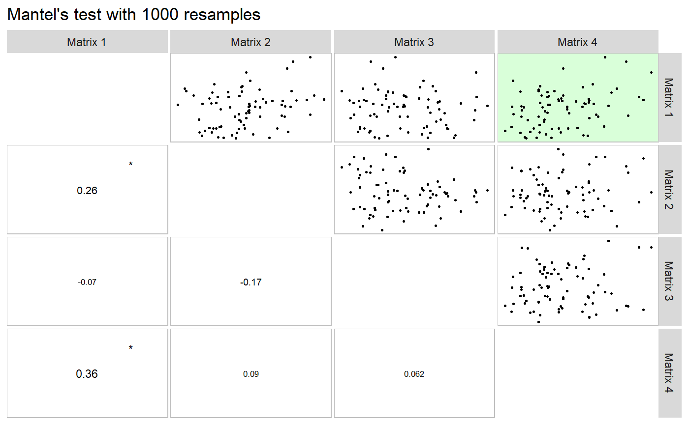

Useful functions for biometrical models
Source:vignettes/vignettes_BIOMETRY.Rmd
vignettes_BIOMETRY.RmdFind possible outliers in a data frame
The function find_outlier() may be used to identify possible outliers in a dataframe. It is suggested that before applying any statistical procedures, outliers be checked.
library(METAAB)
library(dplyr)
data_out = data_ge2
data_out[12, 5] = 26
find_outliers(data_out, var = PH, plots = TRUE)
## No outlier identified.To check the outliers in different levels of a factor, the function group_factors() is used. As an example, we will find possible outliers for each level of the factor ENV.
data_ge2 %>%
group_factors(ENV) %>%
find_outliers(PH)##
## ----------------------------------------------------------------------------
## Level: A1
## ----------------------------------------------------------------------------
## No outlier identified.
##
## ----------------------------------------------------------------------------
## Level: A2
## ----------------------------------------------------------------------------
## No outlier identified.
##
## ----------------------------------------------------------------------------
## Level: A3
## ----------------------------------------------------------------------------
## Number of possible outliers: 4
## Lines: 7 11 14 15
## Proportion: 11.4%
## Mean of the outliers: 2.438
## With outliers: mean = 2.167 | CV = 10.309%
## Without outliers: mean = 2.136 | CV = 7.377%
##
## ----------------------------------------------------------------------------
## Level: A4
## ----------------------------------------------------------------------------
## No outlier identified.Correlations
Linear and partial correlation coefficients
Pearson’s linear correlation does not consider the influence a set of traits on the relationship between two traits. For example, the hypothetical correlation of r = 0.9 between x and y may be due to the influence of a third trait or group of traits acting together. To identify this linear effect between x and y controlling statistically the effect of others traits, the partial correlation is used. From Pearson’s simple correlation matrix, the partial correlation is calculated by the following equation:
\[ {r_{xy.m}} = \frac{{ - {a_{xy}}}}{{\sqrt {{a_{xx}}{a_{yy}}} }} \]
Where \({r_{xy.m}}\) is the partial correlation coefficient between the traits * x * and * y , excluding the effects of the m * remaining traits of the set; \(- {a_{ij}}\) is the inverse element of the correlation matrix corresponding to xy, \({a_{ii}}{a_{jj}}\) are the diagonal elements of the inverse matrix of correlation associated with trait x and y , respectively. The significance of this correlation is also tested by the test * t * according to the following expression:
\[ t_{calc} = r_{xy.m} \sqrt \frac{n-v}{1-r_{xy.m}^2} \]
Where \(t_{calc}\) is the calculated Student * t * statistic; $ r_{xy.m} $ is the partial correlation coefficient for the traits x and y excluding the effect of the other * m * traits; * n * is the number of observations; and * v * is the number of traits. Both the linear and partial correlation coefficients may be obtained using the function lpcor().
dataset = data_ge2
lpc1 = lpcor(dataset[,5:8])## linear partial t prob
## EH x EP 0.8695460 0.84042608 19.1197039 0.000000e+00
## EH x EL 0.3626537 0.14541489 1.8120559 7.195133e-02
## EH x ED 0.6302561 0.48401783 6.8194012 2.024294e-10
## EP x EL 0.2634237 -0.06533702 -0.8072537 4.207817e-01
## EP x ED 0.4580196 -0.21685002 -2.7386735 6.906186e-03
## EL x ED 0.3851451 0.19664134 2.4726342 1.451387e-02# Compute the correlations for each level of the factor ENV
lpc2 = dataset %>%
group_factors(ENV) %>%
lpcor(verbose = FALSE) # Don't show the result in the consoleUsing the pairs_mantel() function, it is possible to compute a Mantel’s test (Mantel 1967) for all pairwise correlation matrices of the above example.
lpc2 %>% pairs_mantel(names = paste("H", 1:4, sep = ""))
This same plot may be obtained by passing correlation matrices with the same dimension to an object of class lpcor and then applying the function pairs_mantel().
as.lpcor(cor(dataset[1:30, 5:ncol(dataset)]),
cor(dataset[31:60, 5:ncol(dataset)]),
cor(dataset[61:90, 5:ncol(dataset)]),
cor(dataset[91:120, 5:ncol(dataset)]),
cor(dataset[121:150, 5:ncol(dataset)])) %>%
pairs_mantel(diag = TRUE,
pan.spacing = 0,
shape.point = 21,
col.point = "black",
fill.point = "red",
size.point = 1.5,
alpha.point = 0.6,
main = "My own plot",
alpha = 0.2)
(co)variance and correlations for designed experiments
The function covcor_design() may be used to compute genetic, phenotypic and residual correlation/(co)variance matrices through Analysis of Variance (ANOVA) method using randomized complete block design (RCBD) or completely randomized design (CRD).
The phenotypic (\(r_p\)), genotypic (\(r_g\)) and residual (\(r_r\)) correlations are computed as follows:
\[ r^p_{xy} = \frac{cov^p_{xy}}{\sqrt{var^p_{x}var^p_{y}}} \ r^g_{xy} = \frac{cov^g_{xy}}{\sqrt{var^g_{x}var^g_{y}}} \ r^r_{xy} = \frac{cov^r_{xy}}{\sqrt{var^r_{x}var^r_{y}}} \]
Using Mean Squares (MS) from the ANOVA method, the variances (var) and covariances (cov) are computed as follows:
\[ cov^p_{xy} = [(MST_{x+y} - MST_x - MST_y)/2]/r \\ var^p_x = MST_x / r \\ var^p_y = MST_y / r \]
\[ cov^r_{xy} = (MSR_{x+y} - MSR_x - MSR_y)/2 \\ var^r_x = MSR_x \\ var^r_y = MSR_y \]
\[ cov^g_{xy} = [(cov^p_{xy} \times r) - cov^r_{xy}]/r \\ var^g_x = (MST_x - MSE_x)/r \\ var^g_y = (MST_x - MSE_y)/r \]
where MST is the mean square for treatment, MSR is the mean square for residuals, and r is the number of replications.
The function covcor_design() returns a list with the matrices of (co)variances and correlations. Specific matrices may be returned using the argument type, as shown bellow.
Genetic correlations
data = subset(data_ge2, ENV == "A1")
covcor_design(data, gen = GEN, rep = REP,
resp = c(PH, EH, NKE, TKW),
type = "rcov")## PH EH NKE TKW
## PH 0.014566384 0.007240156 0.6990162 -0.5971700
## EH 0.007240156 0.012602700 -1.5749695 -0.1460429
## NKE 0.699016154 -0.597169989 3663.8047009 -1223.2067115
## TKW -1.574969487 -0.146042893 -1223.2067115 1014.6059358Phenotypic correlations
covcor_design(data, gen = GEN, rep = REP,
resp = c(PH, EH, NKE, TKW),
type = "pcor")## PH EH NKE TKW
## PH 1.0000000 0.3307336444 0.1417114 0.0008856916
## EH 0.3307336 1.0000000000 -0.4388300 0.3828624624
## NKE 0.1417114 0.0008856916 1.0000000 -0.5522625652
## TKW -0.4388300 0.3828624624 -0.5522626 1.0000000000Residual correlations
covcor_design(data, gen = GEN, rep = REP,
resp = c(PH, EH, NKE, TKW),
type = "rcor")## PH EH NKE TKW
## PH 1.00000000 0.53436776 0.09568529 -0.15533646
## EH 0.53436776 1.00000000 -0.23177906 -0.04084134
## NKE 0.09568529 -0.15533646 1.00000000 -0.63443188
## TKW -0.23177906 -0.04084134 -0.63443188 1.00000000Residual (co)variance matrix
Using the function group_factors() it is possible to pass the data grouped and compute the matrices for each level of the grouping factor. In this example we will obtain the residual (co)variance for each environment.
cov = data_ge2 %>%
group_factors(ENV, keep_factors = TRUE) %>%
covcor_design(GEN, REP, c(PH, EH, NKE, TKW),
type = "rcov")The residual (co)variance matrix and the means (obtained using type = "means") may be used into the function mahala() to compute the Mahalanobis distance
res = data %>% # environment A1
covcor_design(GEN, REP, c(PH, EH, NKE, TKW), type = "rcov")
means = data %>% # environment A1
covcor_design(GEN, REP, c(PH, EH, NKE, TKW), type = "means")
D2 = mahala(.means = means, covar = res, inverted = FALSE)Collinearity diagnostic
The following codes compute a complete collinearity diagnostic of a correlation matrix of predictor traits. Several indicators, such as Variance Inflaction Factor, Condition Number, and Matrix Determinant are considered (T. Olivoto et al. 2017; Olivoto T. et al. 2017) The diagnostic may be performed using: (i) correlation matrices; (ii) dataframes, or (iii) an object of class group_factor, which split a dataframe into subsets based on one or more grouping factors.
Using a correlation matrix, which was estimated earlier
## Weak multicollinearity in the matrix
## NC = 24.666
## Matrix determinant: 0.1144984
## Largest correlation: EH x EP = 0.87
## Smallest correlation: EP x EL = 0.263
## Number of correlations with r >= |0.8|: 1
## Variables with largest weight in the last eigenvalues:
## EH > EP > ED > ELUsing a dataframe
cold2 = colindiag(dataset)## Severe multicollinearity in the matrix! Pay attention on the variables listed bellow
## CN = 10106.712
## Matrix determinant: 0
## Largest correlation: PH x EH = 0.932
## Smallest correlation: ED x CDED = -0.01
## Number of correlations with r >= |0.8|: 4
## Variables with largest weight in the last eigenvalues:
## CL > ED > CDED > CW > EH > KW > PERK > PH > EP > NKE > TKW > NR > CD > NKR > EL## The factors ENV GEN REP where excluded to perform the analysis. If you want to perform an analysis for each level of a factor, use the function 'group_factors() before.'Perform the diagnostic for each level of the factor ENV
cold3 = dataset %>%
group_factors(ENV, verbose = FALSE) %>%
colindiag()##
## ----------------------------------------------------------------------------
## Level: A1
## ----------------------------------------------------------------------------
## Severe multicollinearity in the matrix! Pay attention on the variables listed bellow
## CN = 14149.129
## Matrix determinant: 0
## Largest correlation: EL x CD = 0.912
## Smallest correlation: PH x EL = -0.003
## Number of correlations with r >= |0.8|: 3
## Variables with largest weight in the last eigenvalues:
## CL > CDED > ED > EH > EP > CW > PERK > PH > NKE > TKW > KW > EL > CD > NKR > NR
##
## ----------------------------------------------------------------------------
## Level: A2
## ----------------------------------------------------------------------------
## Severe multicollinearity in the matrix! Pay attention on the variables listed bellow
## CN = 11310.482
## Matrix determinant: 0
## Largest correlation: EL x CD = 0.973
## Smallest correlation: CD x CDED = -0.004
## Number of correlations with r >= |0.8|: 8
## Variables with largest weight in the last eigenvalues:
## CL > ED > CDED > KW > EH > CW > PH > PERK > TKW > EP > NKE > CD > EL > NR > NKR
##
## ----------------------------------------------------------------------------
## Level: A3
## ----------------------------------------------------------------------------
## Severe multicollinearity in the matrix! Pay attention on the variables listed bellow
## CN = 13735.423
## Matrix determinant: 0
## Largest correlation: PH x EH = 0.89
## Smallest correlation: ED x CDED = -0.004
## Number of correlations with r >= |0.8|: 2
## Variables with largest weight in the last eigenvalues:
## CL > CDED > ED > CW > PERK > KW > EH > PH > CD > EP > EL > NR > TKW > NKE > NKR
##
## ----------------------------------------------------------------------------
## Level: A4
## ----------------------------------------------------------------------------
## Severe multicollinearity in the matrix! Pay attention on the variables listed bellow
## CN = 16332.033
## Matrix determinant: 0
## Largest correlation: EL x CD = 0.942
## Smallest correlation: NR x PERK = 0.007
## Number of correlations with r >= |0.8|: 2
## Variables with largest weight in the last eigenvalues:
## CL > ED > CDED > CW > KW > EH > PH > EP > PERK > EL > NKE > NR > TKW > CD > NKRPath analysis
Using KW as response trait and all other ones as predictors.
pcoeff = data_ge2 %>%
path_coeff(resp = KW)## The factors ENV GEN REP where excluded to perform the analysis. If you want to perform an analysis for each level of a factor, use the function 'group_factors() before.'## Severe multicollinearity.
## Condition Number = 7865.84
## Please, consider using a correction factor, or use 'brutstep = TRUE'.Declaring the predictor traits
pcoeff2 = data_ge2 %>%
path_coeff(resp = KW,
pred = c(PH, NKE, TKW),
verbose = FALSE)
summary(pcoeff2)## ----------------------------------------------------------------------------------------------
## Correlation matrix between the predictor traits
## ----------------------------------------------------------------------------------------------
## PH NKE TKW
## PH 1.0000 0.45838 0.56854
## NKE 0.4584 1.00000 -0.06516
## TKW 0.5685 -0.06516 1.00000
## ----------------------------------------------------------------------------------------------
## Vector of correlations between dependent and each predictor
## ----------------------------------------------------------------------------------------------
## PH NKE TKW
## KW 0.7534 0.6811 0.673
## ----------------------------------------------------------------------------------------------
## Multicollinearity diagnosis and goodness-of-fit
## ----------------------------------------------------------------------------------------------
## Condition number: 7.169
## Determinant: 0.4284
## R-square: 0.981
## Residual: 0.019
## Response: KW
## Predictors: PH NKE TKW
## ----------------------------------------------------------------------------------------------
## Variance inflation factors
## ----------------------------------------------------------------------------------------------
## VIF
## PH 2.324
## NKE 1.580
## TKW 1.844
## ----------------------------------------------------------------------------------------------
## Eigenvalues and eigenvectors
## ----------------------------------------------------------------------------------------------
## Eigenvalues PH NKE TKW
## 1 1.699 0.72219 0.4223 0.5478
## 2 1.064 -0.01921 -0.7794 0.6262
## 3 0.237 0.69143 -0.4628 -0.5548
## ----------------------------------------------------------------------------------------------
## Variables with the largest weight in the eigenvalue of smallest magnitude
## ----------------------------------------------------------------------------------------------
## PH > TKW > NKE
## ----------------------------------------------------------------------------------------------
## Direct (diagonal) and indirect (off-diagonal) effects
## ----------------------------------------------------------------------------------------------
## PH NKE TKW
## PH 0.02351 0.01078 0.01337
## NKE 0.32835 0.71632 -0.04668
## TKW 0.40159 -0.04603 0.70635
## ----------------------------------------------------------------------------------------------Selecting traits to be excluded from the analysis.
pcoeff2 = data_ge2 %>%
path_coeff(resp = KW,
pred = c(PH, EH, NKE, TKW),
exclude = TRUE,
verbose = FALSE)Selecting a set of predictors with minimal multicollinearity
pcoeff3 = data_ge2 %>%
path_coeff(resp = KW,
brutstep = TRUE,
maxvif = 5)## The factors ENV GEN REP where excluded to perform the analysis. If you want to perform an analysis for each level of a factor, use the function 'group_factors() before.'## --------------------------------------------------------------------------
## The algorithm has selected a set of 8predictors with largest VIF = 3.346.
## Selected predictors: NR PERK EP CDED EL NKR TKW PH
## A forward stepwise-based selection procedure will fit 6 models.
## --------------------------------------------------------------------------
## Adjusting the model 1 with 7 predictors (16.67% concluded)
## Adjusting the model 2 with 6 predictors (33.33% concluded)
## Adjusting the model 3 with 5 predictors (50% concluded)
## Adjusting the model 4 with 4 predictors (66.67% concluded)
## Adjusting the model 5 with 3 predictors (83.33% concluded)
## Adjusting the model 6 with 2 predictors (100% concluded)
## Done!
## --------------------------------------------------------------------------
## Summary of the adjusted models
## --------------------------------------------------------------------------
## Model AIC Numpred CN Determinant R2 Residual maxVIF
## 2 Model 6 1329 2 2.227 0.85545 0.7384 0.26165 1.169
## 3 Model 5 1148 3 1.339 0.97871 0.9192 0.08077 1.021
## 4 Model 4 1138 4 6.402 0.45950 0.9253 0.07474 2.130
## 5 Model 3 1126 5 12.054 0.19892 0.9317 0.06825 2.310
## 6 Model 2 1125 6 12.259 0.13830 0.9330 0.06695 2.461
## 7 Model 1 1127 7 13.674 0.08406 0.9331 0.06694 2.592
## --------------------------------------------------------------------------Compute the analysis for each level of environment
pcoeff4 = data_ge2 %>%
group_factors(ENV) %>%
path_coeff(resp = KW,
pred = c(PH, EH, NKE, TKW))## The columns GEN REP where deleted. Use 'keep_factors = TRUE' to keep this columns in the grouped data.##
## ----------------------------------------------------------------------------
## Level A1
## ----------------------------------------------------------------------------
## Weak multicollinearity.
## Condition Number = 5.183
## You will probably have path coefficients close to being unbiased.
##
## ----------------------------------------------------------------------------
## Level A2
## ----------------------------------------------------------------------------
## Weak multicollinearity.
## Condition Number = 81.987
## You will probably have path coefficients close to being unbiased.
##
## ----------------------------------------------------------------------------
## Level A3
## ----------------------------------------------------------------------------
## Weak multicollinearity.
## Condition Number = 24.788
## You will probably have path coefficients close to being unbiased.
##
## ----------------------------------------------------------------------------
## Level A4
## ----------------------------------------------------------------------------
## Weak multicollinearity.
## Condition Number = 10.276
## You will probably have path coefficients close to being unbiased.Nonparametric confidence interval for Pearson’s correlation
Recently, a Gaussian-independent estimator for the confidence interval for Pearson’s correlation coefficient was based proposed by Olivoto et al. (2018). This estimator is based on sample size and strength of associations and may be estimated using the function corr.ci(). It is possible to estimate the confidence interval by declaring the sample size (n) and the correlation coefficient (), or using a dataframe.
corr_ci(n = 145, r = 0.34)## -------------------------------------------------
## Nonparametric 95% half-width confidence interval
## -------------------------------------------------
## Level of significance: 5%
## Correlation coefficient: 0.34
## Sample size: 145
## Confidence interval: 0.1422
## True parameter range from: 0.1978 to 0.4822
## -------------------------------------------------corr_ci(data_ge2)## The factors ENV GEN REP where excluded to perform the analysis. If you want to perform an analysis for each level of a factor, use the function 'group_factors() before.'data_ge2 %>% group_factors(ENV) %>% corr_ci()## The columns GEN REP where deleted. Use 'keep_factors = TRUE' to keep this columns in the grouped data.Sample size planning
corr_ss(r = 0.6, CI = 0.1)## -------------------------------------------------
## Sample size planning for correlation coefficient
## -------------------------------------------------
## Level of significance: 5%
## Correlation coefficient: 0.6
## 95% half-width CI: 0.1
## Required sample size: 194
## -------------------------------------------------Mahalanobis distance
Based on designed experiments
options(digits = 2)
mahala_design(data_ge,
gen = GEN,
rep = REP,
resp = c(GY, HM))## 1 2 3 4 5 6 7 8 9 10
## 1 0.000 0.1537 0.040 0.149 0.048 0.292 0.1683 0.054 0.34 0.056
## 2 0.154 0.0000 0.333 0.381 0.057 0.034 0.0062 0.122 0.34 0.024
## 3 0.040 0.1460 0.000 0.083 0.131 0.494 0.3369 0.094 0.35 0.184
## 4 0.333 0.2918 0.337 0.000 0.146 0.449 0.3400 0.072 0.12 0.265
## 5 0.149 0.0344 0.340 0.072 0.000 0.116 0.0493 0.013 0.18 0.021
## 6 0.381 0.4936 0.049 0.013 0.345 0.000 0.0175 0.178 0.28 0.104
## 7 0.083 0.4491 0.017 0.178 0.119 0.125 0.0000 0.102 0.26 0.036
## 8 0.048 0.1157 0.054 0.102 0.184 0.056 0.2645 0.000 0.13 0.065
## 9 0.057 0.1683 0.122 0.338 0.281 0.024 0.0206 0.036 0.00 0.318
## 10 0.131 0.0062 0.094 0.337 0.262 0.184 0.1039 0.065 0.32 0.000# Compute one distance for each environment
maha_group = data_ge %>%
group_factors(ENV, keep_factors = TRUE) %>%
mahala_design(GEN, REP, c(GY, HM))## The columns GEN REP where ignored. Use 'keep_factors = TRUE' to keep this columns in the grouped data.Compute one distance for each environment
maha_group = data_ge %>%
group_factors(ENV, keep_factors = TRUE) %>%
mahala_design(GEN, REP, c(GY, HM))## The columns GEN REP where ignored. Use 'keep_factors = TRUE' to keep this columns in the grouped data.If you have the matrices of means and covariances
# Compute the mean for genotypes
library(METAAB)
means = data_ge %>%
select(-c(ENV, REP)) %>%
group_by(GEN) %>%
summarise_all(mean) %>%
select(-GEN)
# Compute the covariance matrix
covmat = cov(means)
# Compute the distance
dist = mahala(means, covmat)
# Dendrogram
dend = as.dendrogram(hclust(as.dist(dist)))
plot(dend)
References
Mantel, N. 1967. “The detection of disease clustering and a generalized regression approach.” Cancer Research 27 (2). American Association for Cancer Research: 209–20. http://www.ncbi.nlm.nih.gov/pubmed/6018555.
Olivoto, T., A. D. C Lúcio, V. Q. Souza, M. Nardino, M. I. Diel, B. G. Sari, D .K. Krysczun, D. Meira, and C. Meier. 2018. “Confidence interval width for Pearson’s correlation coefficient: a Gaussian-independent estimator based on sample size and strength of association.” Agronomy Journal 110 (1): 1–8. doi:10.2134/agronj2017.09.0566.
Olivoto, T., V. Q. Souza, M. Nardino, I. R. Carvalho, M. Ferrari, A. J. Pelegrin, V. J. Szareski, and D. Schmidt. 2017. “Multicollinearity in path analysis: a simple method to reduce its effects.” Agronomy Journal 109 (1): 131–42. doi:10.2134/agronj2016.04.0196.
Olivoto, T., Nardino M., Carvalho I. R., Follmann D. N., Ferrari M., de Pelegrin A. J., V. J. Szareski, de Oliveira A. C., Caron B. O., and V. Q. Souza. 2017. “Optimal sample size and data arrangement method in estimating correlation matrices with lesser collinearity: A statistical focus in maize breeding.” African Journal of Agricultural Research 12 (2). Academic Journals: 93–103. doi:10.5897/AJAR2016.11799.